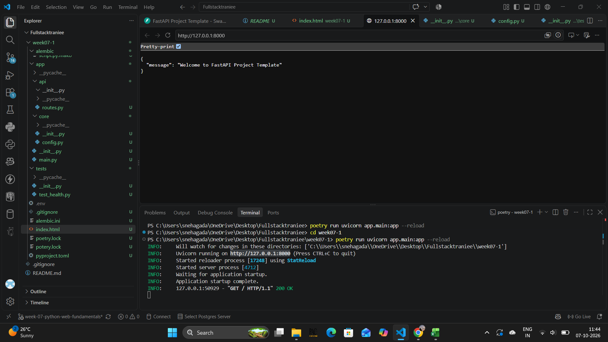
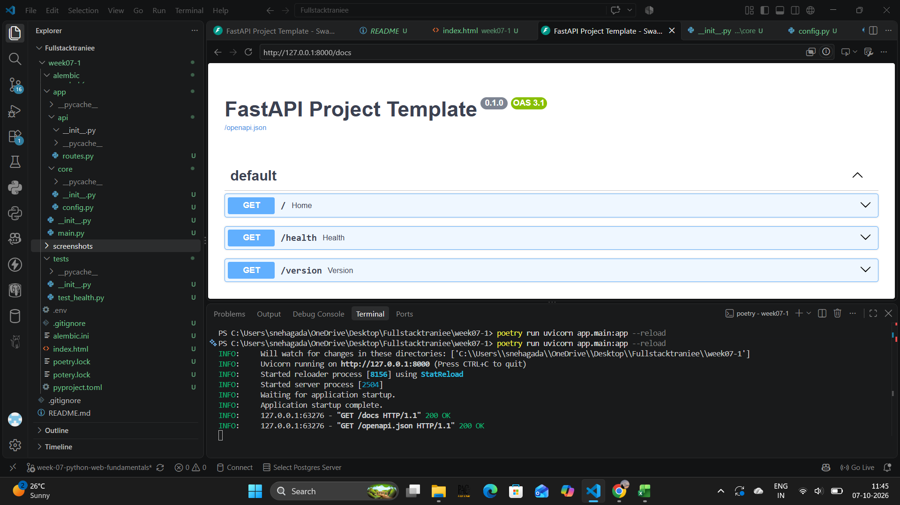
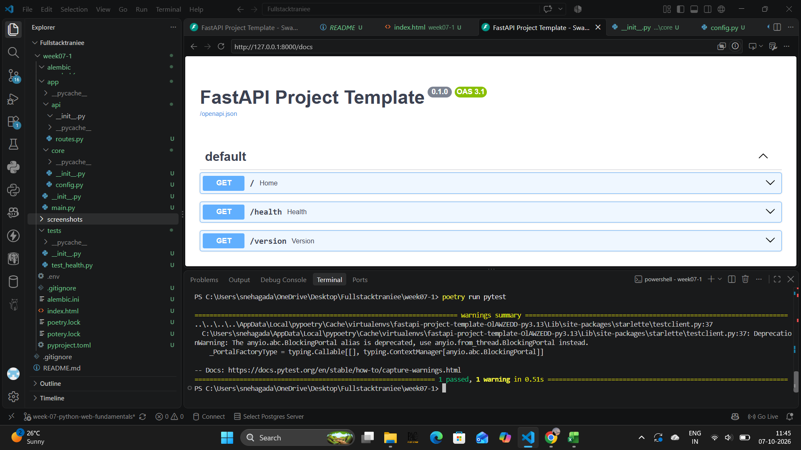
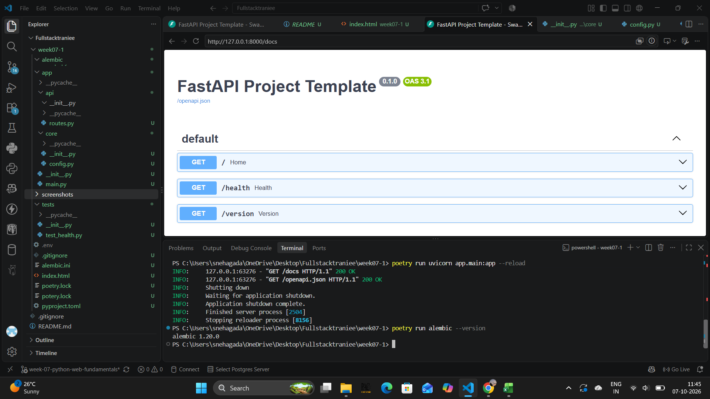

About the Assignment
This assignment focuses on creating a reusable FastAPI project boilerplate that can be used as a foundation for future weeks and projects.
The project includes Poetry for dependency management, FastAPI application setup, testing, and Alembic support for database migrations.
1. FastAPI Application
FastAPI application successfully configured and running.

2. Swagger Documentation
FastAPI automatically provides interactive API documentation through Swagger UI.

3. Tests
Project tests executed successfully using pytest.

4. Alembic Availability
Alembic is installed and available in the Poetry environment.
